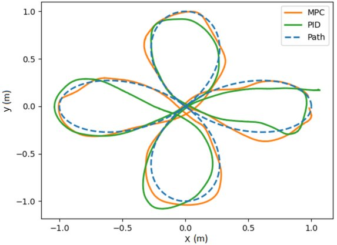
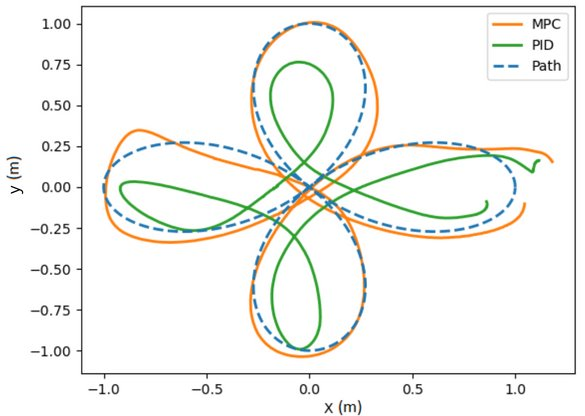
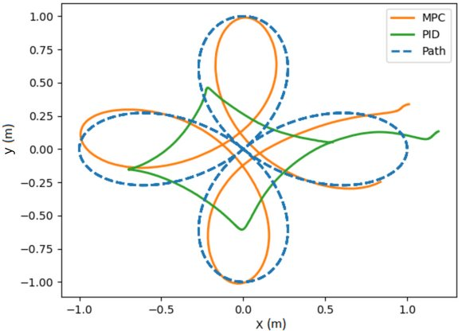

Research / Control & Autonomous Flight
Model Predictive Control for Fast Drone Trajectory Tracking
From flight-data-driven modeling to real-time control of a commercial quadrotor.
Developing and experimentally evaluating a model predictive controller that enables a Parrot Bebop drone to rapidly follow trajectories, with comparisons against PID control.
See the system in flight
The challenge
Commercial drones often have undisclosed dynamics and built-in flight controllers. Accurate trajectory tracking therefore requires a predictive model that reflects the behavior of the actual platform, including its response delay and operating constraints.
My contribution
I carried out the system identification, controller development, software integration, and experimental comparisons:
- Identified drone dynamics from experimental flight data using extended least squares.
- Developed and tuned a constrained MPC controller for horizontal trajectory tracking.
- Integrated the controller with ROS, do-mpc, and CasADi, and evaluated flight performance against PID.
Experimental setup

The controller runs on a ground control computer and communicates with the drone through ROS. OptiTrack provides motion feedback. MPC controls horizontal motion; PID stabilizes altitude and yaw.
How the controller works

Flight data are used to identify the model. At each control step, the optimization computes commands over a prediction horizon while respecting the configured input constraints.
Experimental results
Tracking performance as waypoint speed increases
The same rose-shaped reference trajectory is traversed at increasing angular frequencies. Higher ω means faster changes in the reference waypoints and less time to complete the path.


Lower waypoint speed


Intermediate waypoint speed


Higher waypoint speed
These experimental plots show how tracking changes as the trajectory becomes faster; MPC remains closer to the reference than PID in the illustrated cases.
This work implements a 100 Hz closed-loop sampling rate with optimization times of less than 10 ms per iteration in the reported experimental setup.
| Controller | x-axis error (m) | y-axis error (m) |
|---|---|---|
| MPC | 0.08257 | 0.09074 |
| PID | 0.37827 | 0.38564 |
Publications & code
ICUAS 2024
Fast trajectory tracking for commercial off-the-shelf UAS using Model Predictive Control: real-time implementation and performance analysis.
H. Mirhajianmoghadam, N. Grijalva, and L. R. Garcia Carrillo.
Publication
IEEE IRC 2023
Real-time implementation of Model Predictive Control for fast trajectory tracking of a quad rotorcraft UAS.
H. Mirhajianmoghadam, N. Grijalva, and L. R. Garcia Carrillo.
Publication